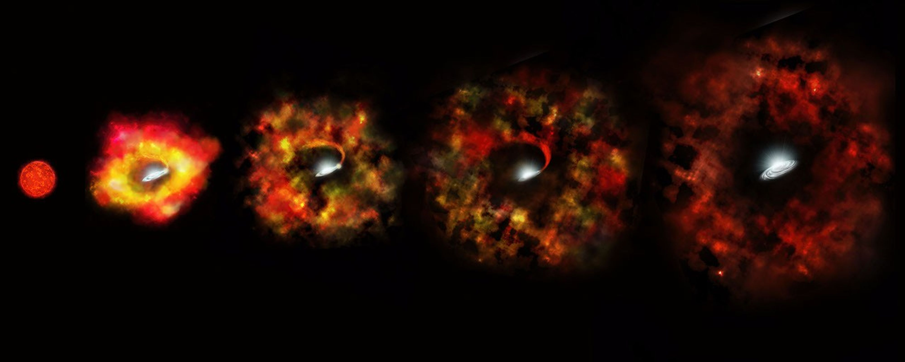

Um buraco negro é uma região no espaço com uma atração gravitacional tão intensa que absolutamente nada — nem mesmo a luz — consegue escapar.
Apesar de serem invisíveis, os cientistas conseguem detectá-los observando os efeitos que causam nos objetos ao seu redor. Atualmente, os buracos negros estão entre os fenômenos mais fascinantes e misteriosos do universo.

Quando uma estrela muito massiva esgota seu combustível nuclear, ela perde a capacidade de sustentar seu próprio peso.
O núcleo da estrela entra em colapso sob a ação da gravidade, comprimindo uma enorme quantidade de matéria em um espaço extremamente pequeno.
Se a massa restante for suficientemente grande, forma-se um buraco negro.
A gravidade de um buraco negro é tão intensa que nem mesmo a luz consegue escapar de sua atração.
Próximo a um buraco negro, o tempo passa mais devagar devido aos efeitos da relatividade.
Existem buracos negros com milhões ou bilhões de vezes a massa do Sol no centro das galáxias.
Explore uma visualização em 3D de um buraco negro e observe seus efeitos sobre a matéria e a luz.